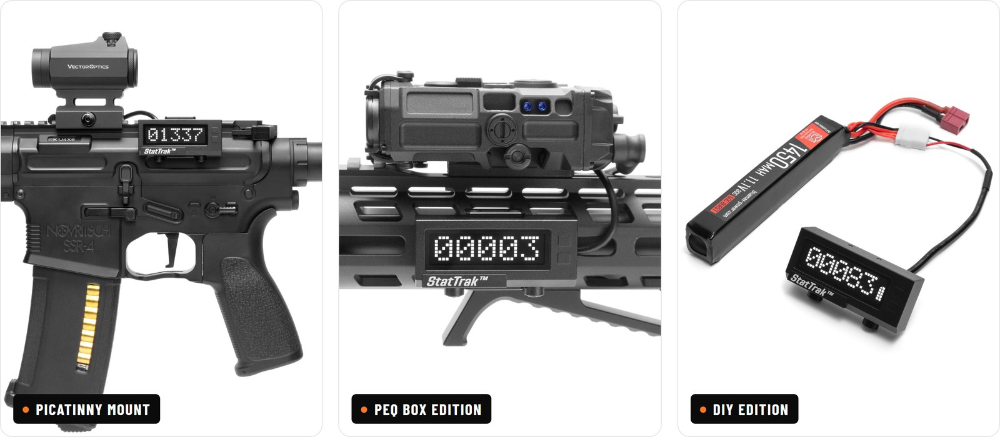
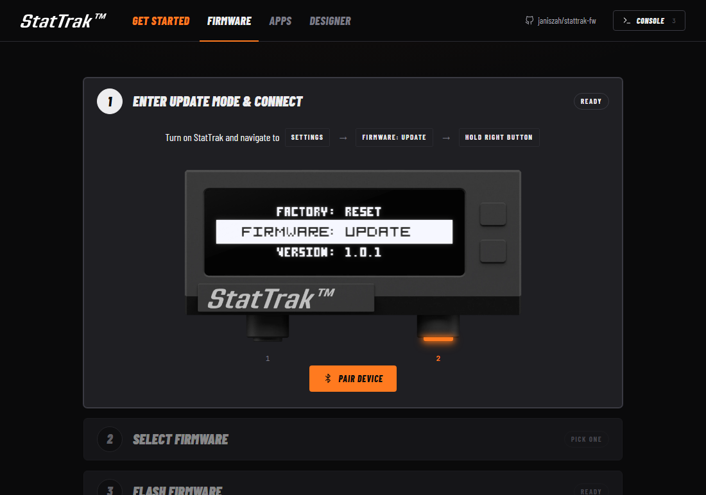
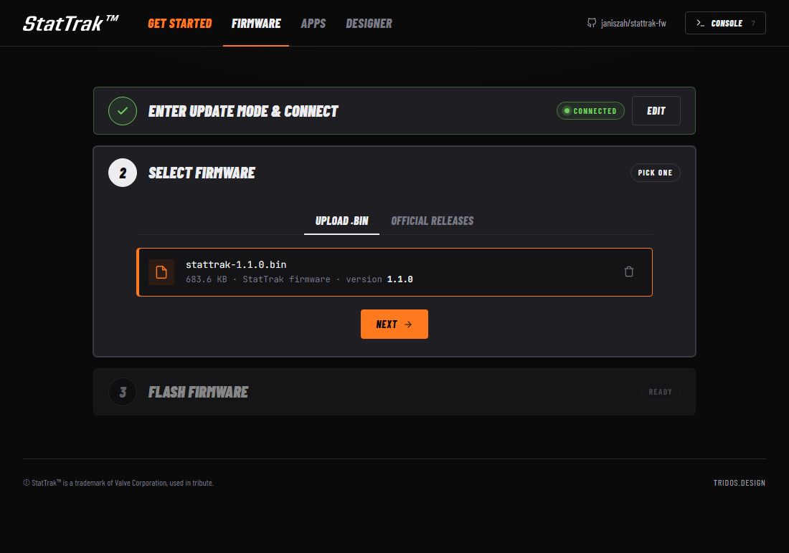
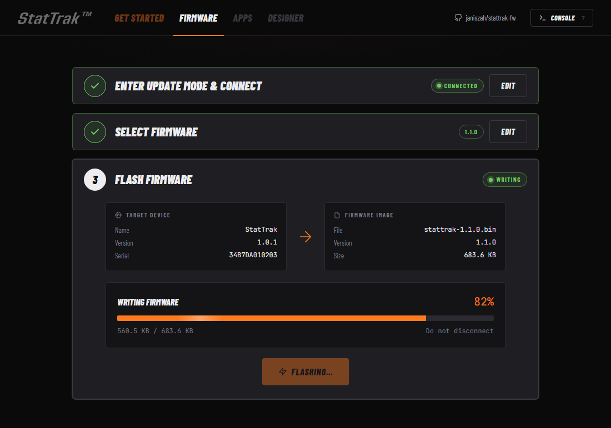
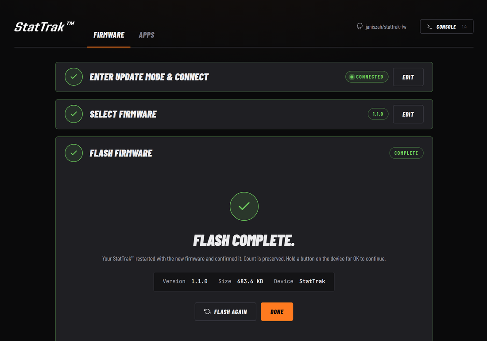
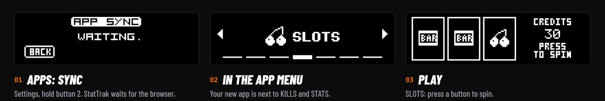
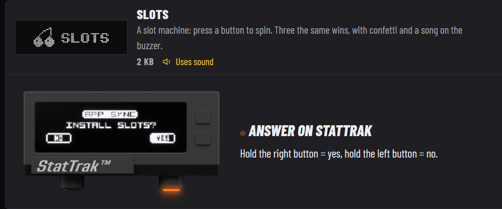
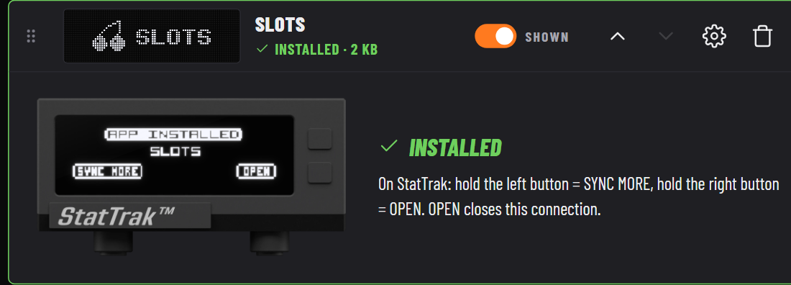
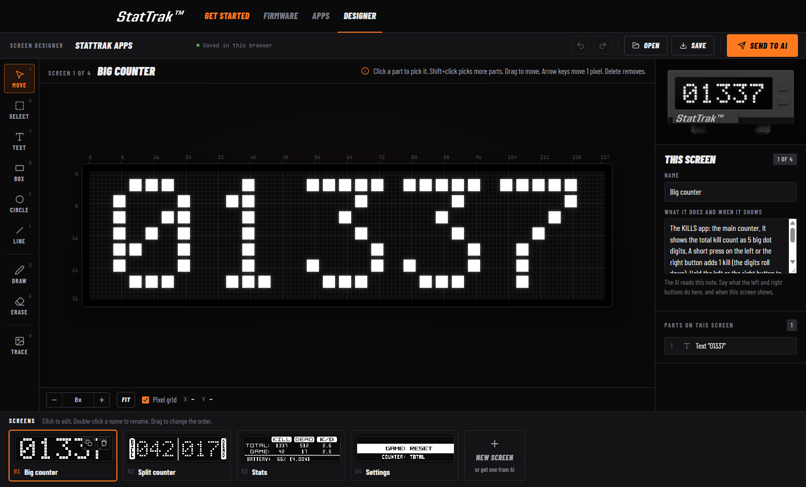
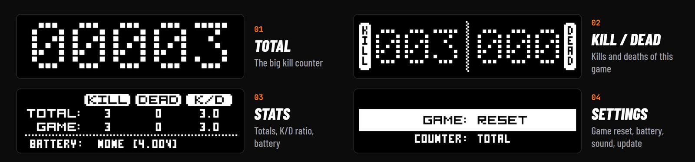

Make your StatTrak yours.
Tell an AI coding tool your idea: an app, a game, a new function. It builds it and shows it to you on your computer. You do not have to be a programmer.
- Copy this text.
- Paste it into an AI coding tool on your computer: Claude Code, Codex, Cursor, GitHub Copilot (agent mode) or Gemini CLI. A chat website alone is not enough.
- Write your idea in place of the dice. The dice is an example. The AI tool makes a first version and shows you a picture after some minutes. You do not need your StatTrak to start.
- How it works, step by step ↓
I have a StatTrak kill counter. I want to make something new for it: an app, a game or a new function. Help me, step by step. 1. Download the StatTrak project to this computer: git clone https://github.com/trakaismikus/stattrak.git 2. Open the folder "stattrak" and read the file AGENTS.md completely. Follow it. 3. Make a first version of my idea and show me a picture of the screen. 4. Ask me before you install anything on my computer. Tell me what it is and how large it is. My idea: a dice. I press the right button, and it shows a number from 1 to 6. I may not be a programmer. Use plain words.
Make your own app or function
An AI coding tool does the technical work on your computer. You say what you want, it shows you pictures of the result, and you decide. The text to start is at the top of this page.
- See a first picture after some minutes. The AI tool makes a first version of your idea and shows you the screen. It asks before it installs anything.
- Answer two short questions. The AI tool then knows how to talk with you.
- Say what you want different, or a new idea. For example: “A timer for the respawn wait.”, “Count my headshots.” or “A small game for the break.” No idea yet? Write “I have no idea yet” in place of the dice, and the AI tool helps you to find one.
- The AI tool tells you how it builds it: as an app or as a firmware change. You do not have to know the difference.
- Look at the pictures and try it in the simulator. The simulator is the real StatTrak software on your computer. You press the buttons with the arrow keys. You do not need your StatTrak for this.
- Not happy with the look? Draw the screen yourself in the Designer and click Send to AI, or ask the AI tool for new proposals.
- Put it on your StatTrak. An app: the AI tool gives you a file that ends in
.stapp. Open My device, connect, click From file and pick the file. A firmware change: a file that ends in.bin, for the Firmware page.
An app or a firmware change?
The AI tool decides this for you, and tells you. Most ideas are an app.
| An app | A firmware change | |
|---|---|---|
| What it is | A new screen that you add: a game, a timer, a counter | A change of the main software of the StatTrak |
| Good for | Almost every new idea | Things that an app cannot do: change a built-in screen, the settings, Bluetooth |
| It goes on in | Some seconds | Some minutes, with a restart |
| The risk | None for the device. An app runs in a closed box | A faulty firmware can make a device unusable. You change the firmware at your own risk |
| Share it | In the app store. Each owner installs it with one click | As a proposal on GitHub. TRIDOS tests it, then it is in the official firmware |
The device has two buttons, a 128 × 32 display, a buzzer and Bluetooth. It has no clock and no internet. The AI tool tells you when an idea cannot work, and why.
Share your app
Other owners can install your app with one click from the app store. Tell your AI tool: “I want to share this app in the app store.” It checks the app and gives you two files. You upload them on the page My apps. A review checks each app within 24 hours.
What every app needs: its own title picture, a true description, and no error when it runs. Not allowed: hate speech, attacks on real people, spam, advertising or links. The store rules.
For AI tools and developers: the rules are in AGENTS.md of the firmware project, the app
guide in skills/stattrak-app/SKILL.md, the app language in docs/APPS.md, the app store
check list in docs/APP_STORE.md.
What is StatTrak?
StatTrak is a small kill counter for airsoft. It mounts on your replica and counts your kills and deaths. It has two buttons, a small display, a buzzer and Bluetooth.

The software inside it, the firmware, is open. You can add apps to it (small games and tools), and with an AI coding tool you can change the firmware itself.
Update the firmware
The Firmware page puts a firmware file on your StatTrak over Bluetooth.
-

1. Connect. On the StatTrak: Settings, thenFirmware: UPDATE, hold the right button. The display showsFIRMWARE UPDATE. On the page: Pair device, then pickStatTrak. -

2. Select the file. Pick an official release, or drop a firmware file (.bin) on the page. The page refuses a file that is not a StatTrak firmware. -

3. Flash. Click Flash firmware and confirm. Keep the device near the computer and keep the page open. -

4. Done. The StatTrak restarts and the page confirms the new firmware. The display showsComplete. Hold a button for OK.
The old firmware stays on the device until the page confirms the new one. If a transfer stops, nothing is lost.
Install apps
An app is a small file (up to 4 KB): a game, a timer, a different counter. It goes on in a few seconds and the firmware stays the same. An app runs in a closed box: it cannot touch the firmware update, Bluetooth or the power.

- On the StatTrak: Settings, then
Apps: SYNC, hold the right button. The display showsAPP SYNC. - On the computer: open the App store, click Connect and pick your StatTrak.
- Click Install next to an app. An app file (
.stapp) from somebody else: My device, From file. - Answer on the StatTrak. It asks
INSTALL <NAME>?. Hold the right button for yes, or the left button for no.


On My device you can move, hide and delete apps, change their settings, and give your StatTrak its own
Bluetooth name (for example StatTrak | SSG10). The new name starts the next time you open Apps: SYNC.
Apps need a firmware with the app menu. If the page says Update the firmware first, update the firmware first.
Design a screen
You know exactly how a screen must look? Draw it in the Designer.

- Real pixels, real fonts. You draw on the 128 × 32 pixels of the device, with its fonts.
- As many screens as you want. Write for each screen what it does: when it shows, and what the two buttons do.
- Your work is safe. The page keeps your work in this browser. Save gives you a file.
- Send to AI. Say in one line what you want, copy the text and paste it into your AI coding tool. It builds exactly what you drew.
Use the device

| Do this | Result |
|---|---|
| Hold both buttons | Power on / power off |
| Short press on both buttons | The app menu: KILLS, KILLS + DEAD, STATS, your apps, SETTINGS |
| App menu: left button / right button | Previous / next app. Both buttons, or wait 3 seconds: open it |
| Total view: short press / long press | +1 kill / −1 kill |
| Settings: short press left / right button | Up / down |
| Settings: long press left / right button | Previous / next value, or start the action |
| A button on the display (YES, NO, OK, BACK…) | Hold the round button under it until it fills. A short press does nothing |
| Hold both buttons for 10 seconds while you switch it on | Firmware update mode (the rescue way) |
If something goes wrong
| What you see | What to do |
|---|---|
| The page does not find the StatTrak | Use Chrome, Edge or Opera, and switch on Bluetooth. Open Firmware: UPDATE or Apps: SYNC on the device first |
Error, or the transfer stops | Nothing is lost. The old firmware is still there. Start again |
Verifying... does not go away | Switch the device off (hold both buttons). It starts with the old firmware again |
| The device does not work as before | Hold both buttons for 10 seconds while you switch it on. The update mode opens. Install the official firmware |